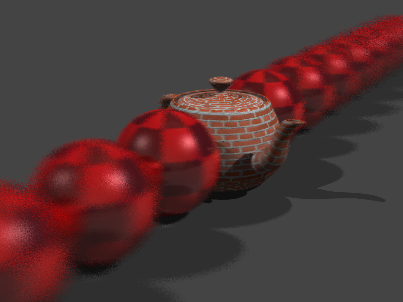
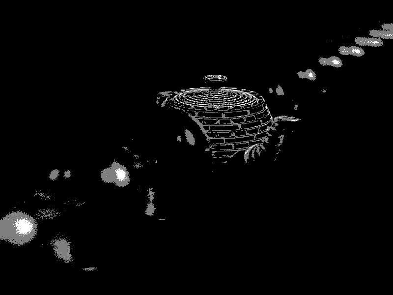

CS6620 - Ray Tracing for Graphics
Project 9 - Depth of Field.
Results
I first started by implementing depth of field with adaptive sampling, 16-64 samples per
pixel.

Seeing how noisy it was, I increased it to 64-96 samples per pixel taking 54:53 to render.

It was still sort of noisy, so I decided to remove the adaptive sampling and just use 64
samples per pixel. It took 52:20 to render.
Machine Specs
Running Windows 10 on a Bootcamped MacBook Pro
| Processor |
Intel Core i7 2.50 GHz |
| RAM |
16GB 1600 MHz DDR3 |
| Graphics Card |
Intel Iris Pro 1536 MB |